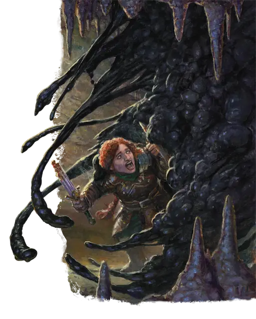

Чёрная слизь
Black Pudding
Большая Слизь, без мировоззрения

Класс Защиты 7 Инициатива −3 (7)
Хиты 68 (8к10 + 24)
Скорость 20 футов, Лазания 20 футов
| мод | спас | ||
|---|---|---|---|
| СИЛ | 16 | +3 | +3 |
| ЛОВ | 5 | −3 | −3 |
| ТЕЛ | 16 | +3 | +3 |
| мод | спас | ||
|---|---|---|---|
| ИНТ | 1 | −5 | −5 |
| МДР | 6 | −2 | −2 |
| ХАР | 1 | −5 | −5 |
Иммунитеты Рубящий, Кислота, Холод, Электричество; Испуганный, Истощение, Оглохший, Опрокинутый, Опутанный, Очарованный, Схваченный
Чувства пассивное Восприятие 8, Слепое зрение 60 футов
Языки нет
Опасность 4 (1 100 опыта; БВ +2)
Особенности
Аморфность. Слизь может проходить через пространство шириной всего 1 дюйм, не тратя на это дополнительное перемещение.
Разъедающее тело. Существо, попадающее по слизи рукопашной атакой, получает 4 (1к8) урона Кислотой. Немагические боеприпасы, попадающие по слизи, уничтожаются сразу после причинения урона. Любое немагическое оружие, касающееся слизи, получает накопительный штраф –1 к броскам атаки и урона сразу после причинения урона. Оружие уничтожается, если штраф достигает –5. Этот штраф может быть убран сотворением заклинания Починка на оружие.
За 1 минуту слизь может разъесть 2 фута немагического металла или древесины.
Паучье лазание. Слизь может лазать по сложным поверхностям, включая потолки, без совершения проверок характеристик.
Действия
Растворяющая ложноножка. Бросок рукопашной атаки: +5, досягаемость 10 фт. Попадание: 17 (4к6 + 3) урона Кислотой. Немагический доспех, носимый целью, получает штраф –1 к своему КЗ. Доспех уничтожается, если штраф снижает КЗ до 10. Этот штраф может быть убран сотворением заклинания Починка на доспех.
Реакции
Разделение. Условие: Слизь Большого или Среднего размера с 10 или более Хитами становится Окровавленной или получает Рубящий урон или урон Электричеством. Эффект: Слизь разделяется на две новых Чёрных слизи. Новые слизи на одну категорию размера меньше исходной и действуют с той же Инициативой. У каждой новой слизи половина Хитов исходной (округляя вниз).
Бонус мастерства +2
Среда обитания Подземье
Сокровища Отсутствуют
Чёрная слизь
Делящаяся разъедающая масса
Чёрные слизи — это бесформенные скопления хищных клеток. Едва учуяв органику, слизь ползёт к добыче, растворяя живую плоть и всевозможные предметы. Если чёрную слизь поразит молния или рубящий удар, она разделяется на две меньшие, но самостоятельные особи.
К появлению чёрной слизи могут привести различные сверхъестественные обстоятельства. Совершите бросок по таблице «Источники чёрной слизи» для вдохновения или определите сами её происхождение.
Источники чёрной слизи
| 1к6 | Чёрная слизь образовалась из… |
| 1 | Кислотной слюны древнего чёрного дракона. |
| 2 | Крови или сильных эмоций мерзкого божества. |
| 3 | Вселенской энтропии или гибельных планарных сил. |
| 4 | Проклятия, преобразившего забытого тирана. |
| 5 | Запретной или промышленной магии. |
| 6 | Некротической материи, оживлённой неприкаянными духами. |